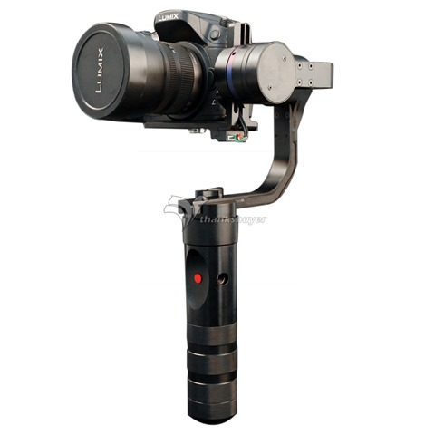
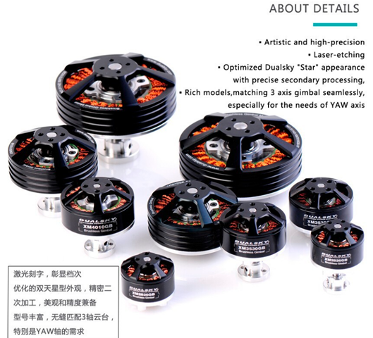
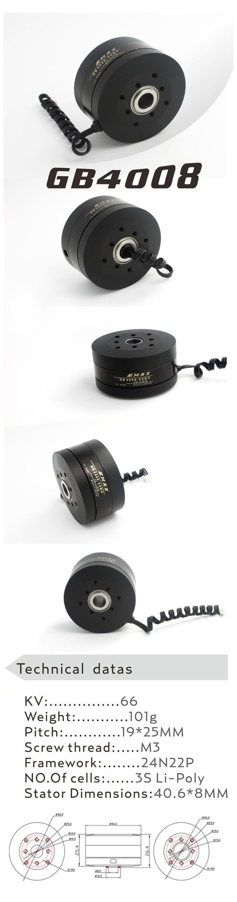
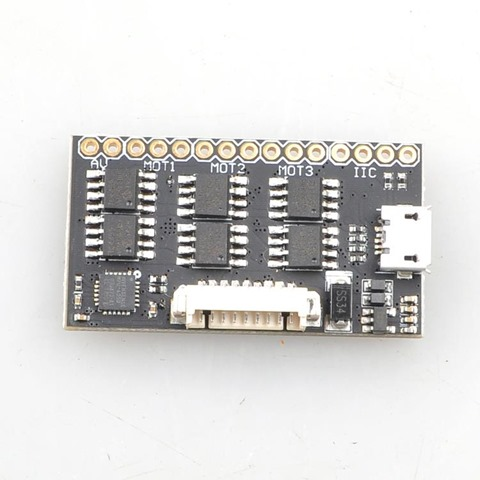
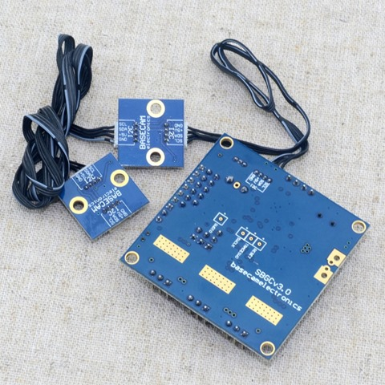

数年前から、3D プリンターを買ったら作ってみたかったモノで、3軸の Gimbal があります。モーターはブラシレスを使っているので、BG（ブラシレスジンバル）という短縮ワードも良く目にします。 
乗せたいカメラの候補は、すでに決定しててまだゲットしていませんが、Lumix DMC-FZ200 という型落ちのカメラです。このカメラ、レンズが良くて、さらに映像も 1280×720 の実用になるサイズで 120fps が可能です。こうして撮ると、以下のような映像が作れます。
[youtube https://www.youtube.com/watch?v=Lp_pmgCsmco]
対角V-Slot とも繋がるのですが、このカメラを円状に回して 120fps で物体を周辺から回して撮るとかっこいいんじゃないかと考えています。レビューするときに、モノをそうやって撮ると新鮮だと思うのでぜひ実現してみたいなと。そのときに3軸のジンバルもあるとなお良いと思うわけです。円状に回すときのフレームはまだ考えていませんが、自転車のリムとか使えないかなぁと。
ジンバルは、この１～２年で日本でもメジャーになってきています。たとえば、サンコーレアモノショップで扱っている以下の商品などです。
 こういうタイプのものや、
こういうタイプのものや、
 こういう感じのものです。軽いアクションカメラはスマホは乗ります。
こういう感じのものです。軽いアクションカメラはスマホは乗ります。
3万か、２．５万くらいでそれぞれ購入できますが、もう少し重いカメラを載せようと思うと、一気に高くなります。
 約10万。うーん、買えないです。
約10万。うーん、買えないです。
まぁ、しかし、このサイズもアリエクでなら、5万未満で買えます。
 まぁ、でもまだ買えません。（まぁ、買うつもりは毛頭ないのですが）モノは、モーターが３つとバッテリーと制御ボードと筐体で構成されているだけですから、もっと部品代は安いはず。
カメラ本体は、先に紹介した Lumix の FZ200 の中古（約２．５万）をいつか買いたいと思っています。それを買える日に備えて、ジンバルを自作するには、どのように作るのかを抑えていこうと思います。
乗せるカメラの重さは、約６００ｇですが、このクラスになると、3万未満の3軸ジンバルでは無理で、ブラシレスモーターを大きめのトルクのあるものにしないと制御できません。
モーターは、Gimbal Brushless Motor と検索すればたくさん出てきます。3万未満クラスのジンバルに使われているのは、30mm 未満の直径のモーターで GoPro や SJ4000 などの200ｇ未満の重さを制御できるようです。たとえば、以下のようなモーターです。

結構小さいですね。価格はだいたいこのクラスで、１こ1000円前後くらいです。１つ上のクラスのモーターだと、以下のようなのがあります。

これが直径46mm ほどの大きさです。価格は、3500円前後というところですかね。3個で1万くらいします。ジンバルのブラシレスモーターは、シャフトの中にケーブルを通せるようになっているのが特徴で、組み付けたときにすっきりした概観を作れます。外の電極数は12スロットのタイプが多く、中心にあるプーリーの磁極は14極です。この数値は、12n14p というように表記されます。
この数が大きなものだと、たとえば、24N28P というのもあり、スロットと磁極の数が増えればトルクが増しコギングが少なくなるので、滑らかに回るはずです。

どのくらいのモーターで６００ｇのカメラが制御できるのかが、今まで良くわかりませんでした。こういう時は、あたりをつける為世界中のDIY 好きが作っている映像を見るのが手っ取り早いです。いろいろ見ていくうちに、ロシアの方が作ったジンバルのモーターは、Lumix FZ200 クラスの600g もいけそうなんじゃないかとアタリがつきました。
[youtube https://www.youtube.com/watch?v=kI5wOiU_KPI]
９：２６あたりに、大きめのカメラが載って動いています。カメラの機種は特定できませんでしたが、Lumix FZ200 も動くんじゃないかと思います。ここで使われているモーターは、調べてみると以下です。

Emax GB4008 66KV 3S LIPO Gimbal Brushless Motor
¥ 1,922 x 3
Emax っていうメーカーはラジコン用のサーボやブラシレスモーターなどを作っているメーカーで前回、CNC のスピンドル作りのためにモーターを選定していたときに見たことがあります。
値段も手ごろだったので、これを３つポチっておきました。このモーターもシャフトの中にケーブルを通せるようです。24N22P ということで、24スロットの電極に、22極のプーリーでトルクもありそうです。値段とのバランスが取れている良さそうなモーターじゃなかろうかと思います。
あとは、ジンバル用の制御基板とソフトウェアです。Alexmos というものと、Storm32 というのが見つかりました。どちらも32bit があります。値段は、Storm32 が安く、オープンソースで回路図などもあります。Alexmos というのはなぜ高いのかは良くわかっていません。価格差が４，５倍あります。まずは、安いのから攻めて見ます。StorM32のは、Wiki に詳細があります。
Alexmos のSimpleBGC のソフトウェアマニュアルは和訳したものが以下にありましたので参考にさせていただきました。
桃日記
本家のは以下です。
Basecam
Downloads for 32-bit boards
参考にしているサイトの作者は、Storm32 を使っているし、こちらのボードが安いのでまずはこれを使ってみることにします。5cm四方のボードと、小さなMicro タイプのものとが見つかりました。ボードを見る限り、Micro のほうはボタン２つがないので、ファームウェアの書き込みは仮配線が必要のようです。組み込み用途という感じです。
大きなサイズは、2000円ほど。小さなのは2500円ほどです。正確なサイズはボードが到着してから検討するとして、概略を抑えていくことにしましょう。

チップはどちらも、STM32F103RC が使われています。モータードライバーのチップは、Micro のほうは6個になっていますので違う型番ということのようですね。ジャイロは、どちらもオンボードと外付けと２つ、MPU6050 があります。
StorM32 の Wiki にボード紹介のところに詳細はあります。ポチッた後に気が付いたのですが、このボードはどうやら赤字で書いてあるように、2S より高い電圧だと熱くなって誤作動するよと。モータドライバは、TC4452 でロジック電圧の3.3V を作っている部分かタンタルコンデンサが載っていないのが悪いのか、PCBの面積が少ないのが問題なのかは不明ですが、問題を抱えているボードのようです。
大きなボードのほうは、TIのDRV8313が使われているようです。28pin の28HTSSOPは、おおよそ160円ほどです。この差が出ているのではと思われます。
こういう駄目な設計のボードは参考になるので、回路図もあることですし、自作PCB を設計するときの参考にします。このボードを構成する部品の内、CPU と ジャイロはそれぞれ250円なので、作ってもPCB を入れて1000円未満くらいだと思います。

このミニサイズのものは、他にも以下のようなものがあります。
http://www.olliw.eu/storm32bgc-wiki/STorM32_Boards
このモータードライバは、STのL6230Qのようで、32pin の QFN パッケージです。

アリエクでは同じものは見つかりませんでしたが、以下のものはありました。


これは2軸のようなので、パス。
そして、Alexmos のボードは以下のような感じです。一番最安値でも9000円、平均12000円というところでしょうか。主要なチップの構成は似た感じです。

外見からの差は、センサーがI2C で繋がるようです。ボードのサイズは50mm四方です。

部品代概略は、Storm32 のボードで作るとして約1万くらいです。バッテリーを入れると少し超える感じですかね。うまく筐体を作れれば、面白くなりそうな DIY ですので継続的にすこしづつやっていこうと思います。ボードも Storm32 の大きなものと小さなものを２つポチっておきました。
コントロールボードも、構成部品はほぼ同じなので、StorM32 と Alexmos との違いは制御ソフトウェアなのかなと理解しました。
3Dプリンターでジンバルの筐体作りも少しづつ初めていこうかなと。